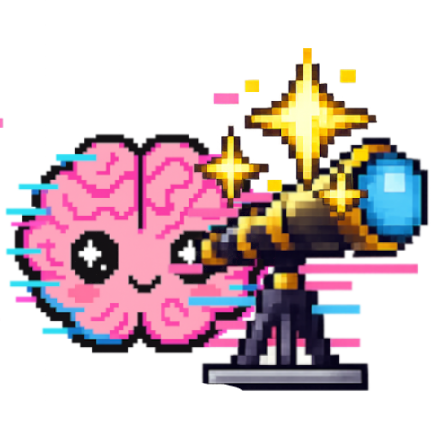
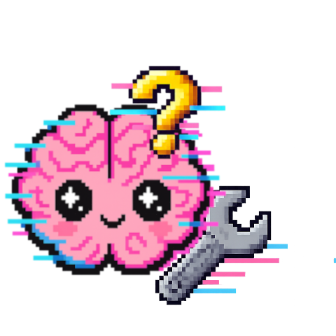
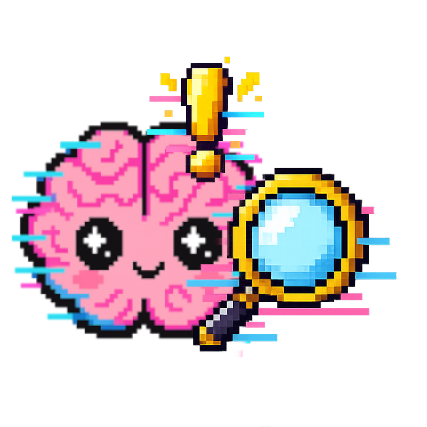
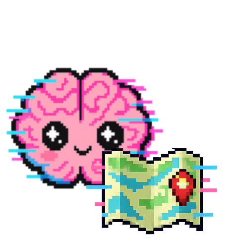
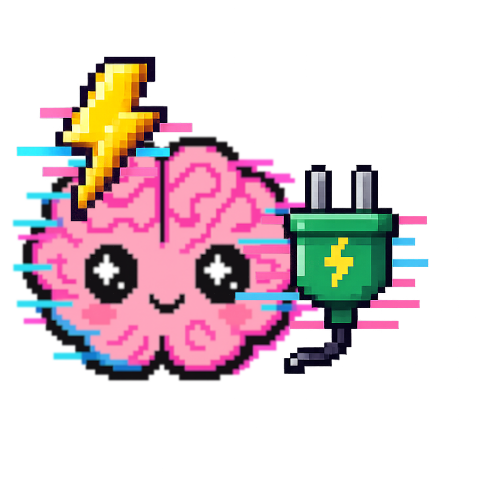
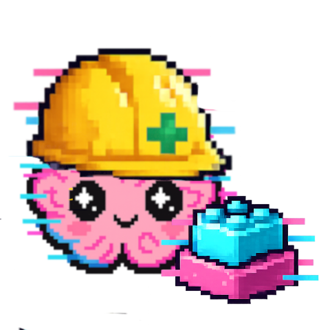

Observatory
Discover the state and evolution of your M3M0R·IA.
Your memory. Your context. Ready to think with you.

Status
Evolution
Providers
Top themes
Vaults
Asset bank
Configuration
Prepare the reconstruction of your M3M0R·IA.
Your memory. Your context. Ready to think with you.

Paths
Options
Verification
Check the requirements of your M3M0R·IA.
Your memory. Your context. Ready to think with you.

Pre-flight check
Checks your configuration before running — it catches, for example, an export file that isn't actually a ChatGPT export (it happened to V0ra; that's why this tab exists).
Cartography
Discover the relationships in your M3M0R·IA.
Your memory. Your context. Ready to think with you.

orphans talk about
you recognize
in MERGED/_Topics
the ring gains gravity
Orphan cloud
Start here. Hit "Generate cloud" and you'll see the vocabulary of your project-less conversations: the bigger a word, the more notes it appears in (titles included). The magenta ones match names of projects that already exist — natural candidates for a theme. Click any word to see which notes contain it. This is just a spyglass: nothing gets classified or modified here.
Themes
With what the cloud showed you, create themes: a name and its words
separated by commas. Single words work (mirror), so do phrases
(beyond the prompt) and metadata rules in the form
field=value — for example source=claude_export groups
everything imported from Claude. A note can fall into several themes: that's the
healthy part. "Save themes" persists your curation in topic_map.json;
"Generate index" creates one note per theme in MERGED_VAULT/_Topics
with links to its orphans, and Obsidian's graph does the rest.
Conversations are never touched, the index is regenerable and disposable, and
Construction keeps it fresh on its own.
Orphan projects (ChatGPT)
What is this: in ChatGPT, a conversation can be born inside a
"project" that the export identifies with an internal ID (gizmo) but no human name.
Each row below is one of those unnamed IDs. To help you recognize it, we show the
title of one of its conversations as a sample, and expanding the row reveals the
full list with dates. Type the name you would give it and hit "Save": the name is
recorded in gizmo_map.json, the existing vault is patched in place,
and steps 2→4 are relaunched — without repeating the import. Rows you leave blank
will keep waiting here, no rush.
Reconnection
Recover and reconnect what was forgotten with your M3M0R·IA.
Your memory. Your context. Ready to think with you.

Pending downloads
Content that shows up in your conversations but doesn't ship in the export: all that's left is a link, and it may expire. Download it from there and upload it here, and it gets archived into the bank it belongs to, using the same scheme as the automatic extraction. This app never downloads anything on its own.
Rebuild indexes
Refreshes the per-provider content indexes on MERGED_VAULT and PRJ_VAULT without reprocessing your exports — use it after registering pending downloads, moving assets by hand, or any change that doesn't need the import/merge/organize steps.
Construction
Rebuild your M3M0R·IA.
Your memory. Your context. Ready to think with you.

Build the vault
(ChatGPT, Claude...)
one note per conversation
consolidated variants
view by project
and metadata